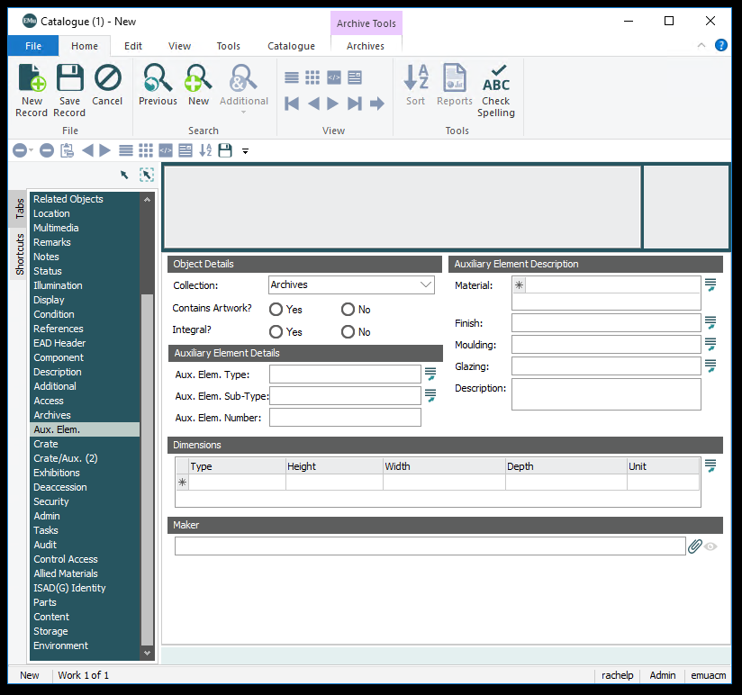
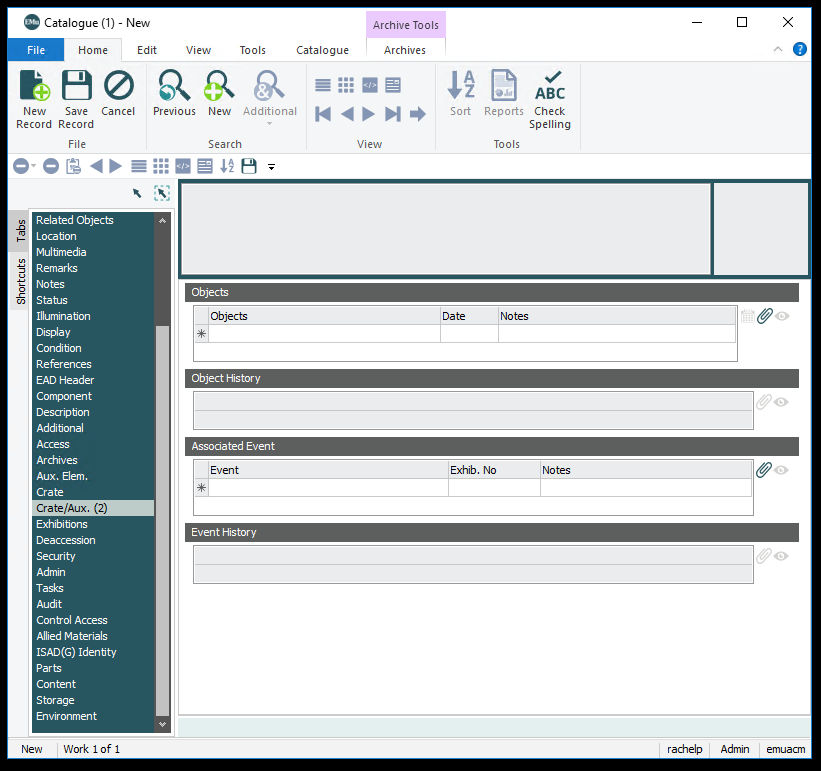
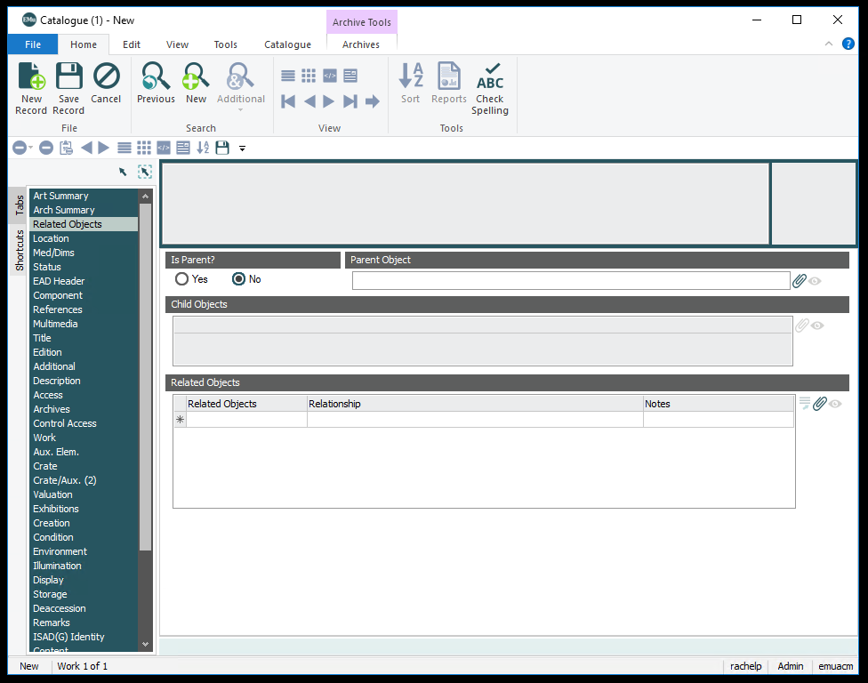

Creating Crate Records in EMu
This is documentation for the entirety of the Catalogue Module. For specific documentation on cataloging art, archives, library books, and other materials. Please go to the workflows page.
Aux. Elem
Frame specific information.
Object Details
Collection
Same as collection type. Select Frames. For more information go here.
Contains Artwork?
If the frame is stored with artwork inside, yes will be checked.
Integral
If the frame is a part of the work and cannot be easily be removed, check yes.
Auxiliary Element Details
Aux. Elem. Type
Not used.
Aux. Elem. Sub-Type
Not used.
Aux. Elem. Number
Not used.
Auxilary Element Desciption
Material
Metal or wood
Finish
Color of wood or metal
Moulding
Yes or No
Glazing
Yes or No
Description
Finish
Dimensions
Type
Type of dimension. Pulls from dimension type field on the Med/Dims Tab. Could be used to define outer versus inner framed dimensions.
Height
Height in inches, rounded to the nearest 1/8 inch.
Width
Width in inches, rounded to the nearest 1/8 inch.<
Depth
Depth in inches, rounded to the nearest 1/8 inch.<
Unit
"inches"
Maker
Maker
Creator of frame. Attaches to Parties Module, see more information here.
Crate/Aux.
Information regarding objects housed in frames and crates.
Objects
Objects
Objects that traveled in frame or crate.
Date
Date object traveled in frame or crate.
Notes
Notes about object.
Associated Event
Event
Exhibition where crate was used.
Exhib. No
Not used.
Notes
Notes about exhibition.
Related Objects
Displays catalogue records attached to lot.
Is a parent?
Accession Lot Number numbers are assigned to all activities related to objects, such as the purchase, donation, exhibition, or deaccession of an object or group of objects. The number represents the activity itself. For group activities, each object in the acquisition, exhibition, or deaccession is assigned the same Accession Lot Number in order to eliminate repetitive data entry. Numbering schemes vary by type of activity.
Parent Object
Accession Lot Number numbers are assigned to all activities related to objects, such as the purchase, donation, exhibition, or deaccession of an object or group of objects. The number represents the activity itself. For group activities, each object in the acquisition, exhibition, or deaccession is assigned the same Accession Lot Number in order to eliminate repetitive data entry. Numbering schemes vary by type of activity.
Related Objects
Related Objects
Object relationships are recorded on the Related tab in Argus. Each related work must already have its own object record before it can be linked to any other object.
For all relationships (subject, study, duplicate, or negative/print), entry of a valid accession number in the Related ID field automatically establishes a link with that object record and performs the appropriate entry in the second record. The cataloguer does not need to open the second object record to repeat the data entry process.
Relationship
Accession Lot Number numbers are assigned to all activities related to objects, such as the purchase, donation, exhibition, or deaccession of an object or group of objects. The number represents the activity itself. For group activities, each object in the acquisition, exhibition, or deaccession is assigned the same Accession Lot Number in order to eliminate repetitive data entry. Numbering schemes vary by type of activity.
| Relation | Links to... | Description |
|---|---|---|
| Bound volume | Bound volume | Use for works bound together |
| Copy | Original | Use to link original objects to later formats (original positive to copy negative, etc.) |
| Duplicate | Duplicate | Use to link duplicate objects, usually prints |
| Negative/Transparency | Use to link print to negative or transparency | |
| Final work | Study | Use to link final work to studies and vice versa |
| Frame | Fits Object | Use to link a frame to any corresponding objects |
| Group | Group | Use to link groups of works not otherwise readily apparent in title or accession number |
| Part | Whole | Use to link objects (prints, one bookend, etc.) in a portfolio, album, pair, triptych, etc., to the whole group record |
| Partial | Partial | Use to link other parts of compound object when no whole group record |
| Series | Series | Use to link distinct objects from a titled series. |
| Subject | Subject | Use to link objects that have the same subject matter |